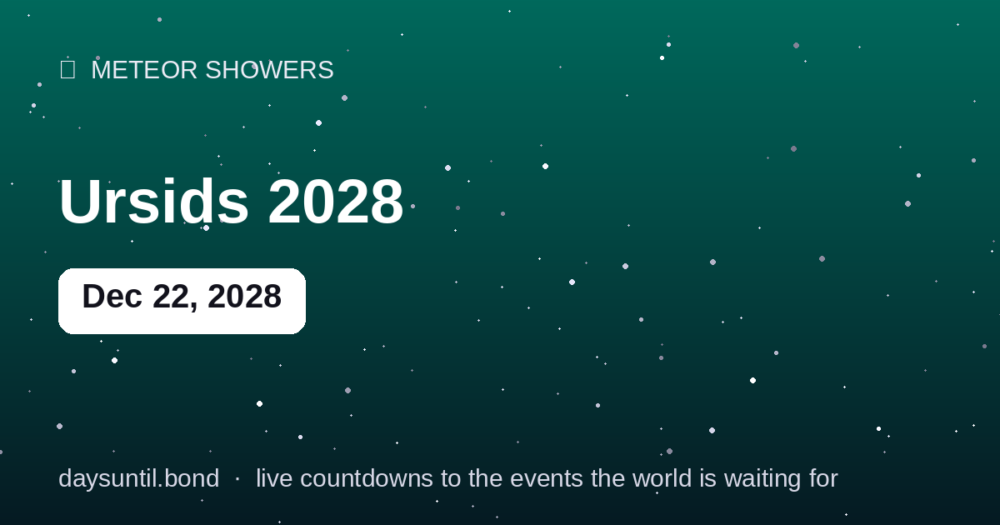

How Many Days Until Ursids 2028?
Ursids 2028 falls on Friday, December 22, 2028.
The live counter above updates every second in your local time zone. The date and weekday are shown in the event details.

Quick facts
| Peak night | December 22–23, 2028 |
|---|---|
| Best viewing | After midnight to pre-dawn |
| Equipment | None — naked eye only |
About Ursids 2028
The Ursids meteor shower peaks on the night of December 22, 2028 (December 22/23). The year's quiet closer: a modest shower (5–10 per hour) radiating from Ursa Minor, occasionally surprising with outbursts — for the dedicated, on the longest nights.
Best practice for any meteor shower: dark sky, no telescope, eyes adjusted for 30 minutes, look halfway up toward the radiant's constellation. The counter above runs to the peak night; meteors are visible several nights either side.
Your Ursids 2028 countdown milestones
It is easier to plan against fixed points than against a number that moves. These are the dates on which the countdown to Ursids 2028 passes each marker between now and the day itself — the last one falls on Thursday 21 December, when there will be 1 day left.
| Milestone | Day | Date | Remaining |
|---|---|---|---|
| 365 days | Thursday | 23 December 2027 | 365 days to go |
| 200 days | Monday | 05 June 2028 | 200 days to go |
| 100 days | Wednesday | 13 September 2028 | 100 days to go |
| 50 days | Thursday | 02 November 2028 | 50 days to go |
| 30 days | Wednesday | 22 November 2028 | 30 days to go |
| 14 days | Friday | 08 December 2028 | 14 days to go |
| 7 days | Friday | 15 December 2028 | 7 days to go |
| 3 days | Tuesday | 19 December 2028 | 3 days to go |
| 1 days | Thursday | 21 December 2028 | 1 day to go |
How the remaining time breaks down
760 days is the headline, but it is rarely the number that helps. 544 of those are weekdays and 216 fall on a weekend, which is the split that matters if you are planning around work. It is 108 weeks and 4 days, or roughly 25.0 months, or about 18,240 hours.
| Unit | Until Ursids 2028 |
|---|---|
| Days | 760 |
| Weeks | 108 weeks and 4 days |
| Months (approx) | 25.0 |
| Weekdays | 544 |
| Weekend days | 216 |
| Hours | 18,240 |
| Sleeps | 760 |
Working days are Monday to Friday and do not subtract public holidays, which vary by country and employer — the full month-by-month split is on our weekday page for Ursids 2028.